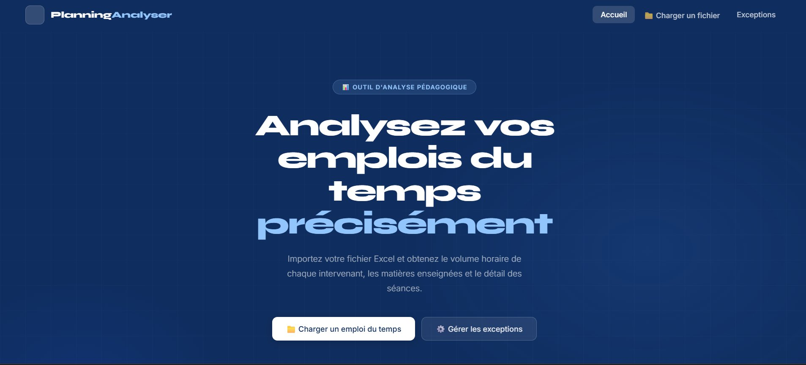
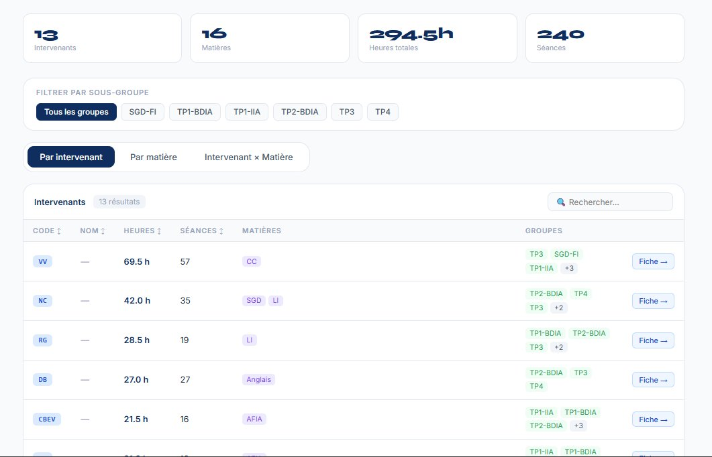
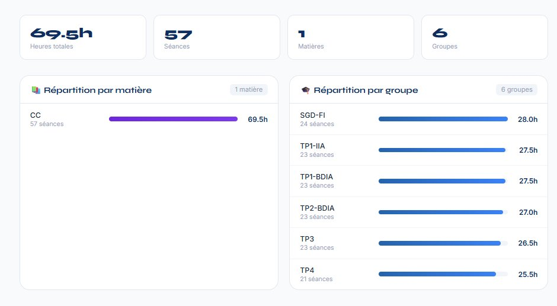
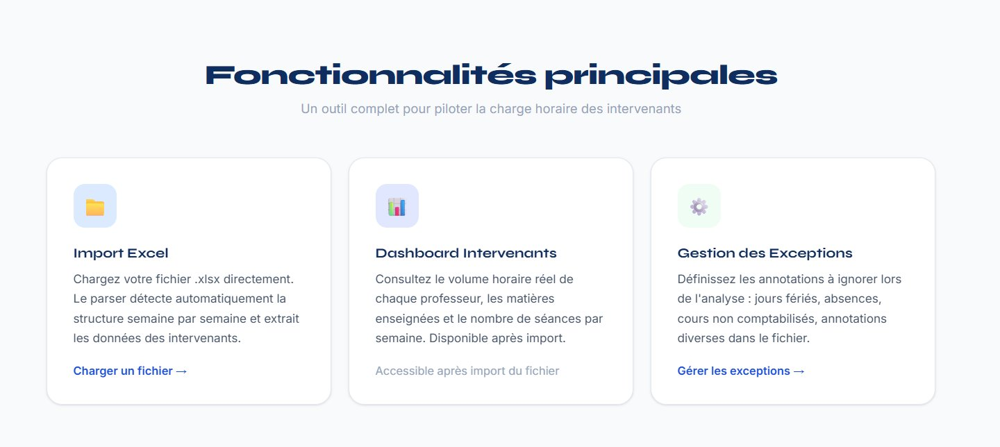
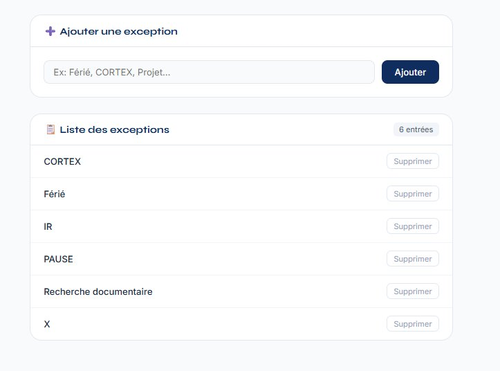

Application web d'analyse automatique des emplois du temps universitaires — développée dans le cadre d'un projet tutoré pour Madame Sandrine Lanquetin.
Mission confiée par ma tutrice de projet dans le cadre de ma Licence Professionnelle à L'université de Bourgogne.
Dans le cadre de mon projet tutoré, Madame Sandrine Lanquetin, enseignante coordinatrice pédagogique, m'a confié la mission de développer un outil d'analyse des emplois du temps universitaires.
Chaque semestre, elle gère plusieurs fichiers Excel représentant les plannings de ses intervenants. Extraire les volumes horaires se faisait manuellement — une tâche longue, fastidieuse et source d'erreurs.
L'objectif : créer une application web permettant d'importer ces fichiers et d'obtenir automatiquement des statistiques détaillées par intervenant, par matière et par groupe d'étudiants.

Page d'accueil

Dashboard d'analyse — vues filtrables par groupe

Fiche détaillée par intervenant

Fonctionnalités principales

Gestion des exceptions (CRUD PHP/MySQL)
Trois vues complémentaires, des filtres dynamiques et une fiche détaillée par intervenant.
Glissez-déposez votre fichier .xlsx. Le parser détecte automatiquement les feuilles semaines, les groupes d'étudiants et extrait toutes les séances.
Group by intervenant, group by matière, et la combinaison intervenant × matière — toutes filtrables par sous-groupe d'étudiants en temps réel.
Répartition des heures par matière et par groupe sous forme de barres proportionnelles, avec les statistiques globales en en-tête.
Les sous-groupes sont détectés dynamiquement depuis les en-têtes du fichier Excel. Aucun codage en dur — l'outil s'adapte à n'importe quelle structure.
CRUD PHP/MySQL pour gérer la liste des valeurs à ignorer lors du parsing : jours fériés, pauses, annotations diverses.
Tout le parsing est réalisé côté navigateur avec SheetJS. Le fichier Excel ne quitte jamais le poste de l'utilisateur.
Le problème central du projet — et sa solution.
Cellule fusionnée Excel
| Horaire | TP1 | TP2 | TP3 |
|---|---|---|---|
| 8h00 | CM Réseaux OT — fusionné sur 3 colonnes | ||
| 9h00 | TD Algo RR | TD Algo RR | — |
Dans Excel, un cours magistral pour toute la promo fusionne plusieurs colonnes. Sans traitement spécifique, lire colonne par colonne multiplie le comptage par le nombre de groupes.
La solution repose sur la propriété !merges de SheetJS, qui expose les métadonnées de fusion.